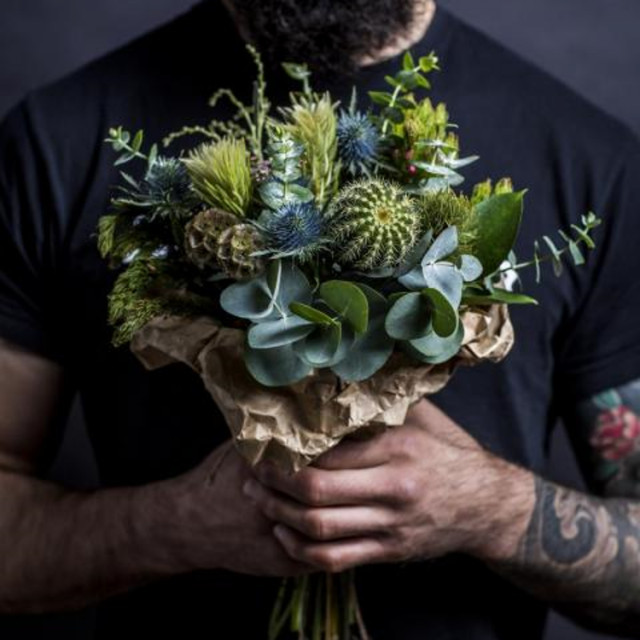
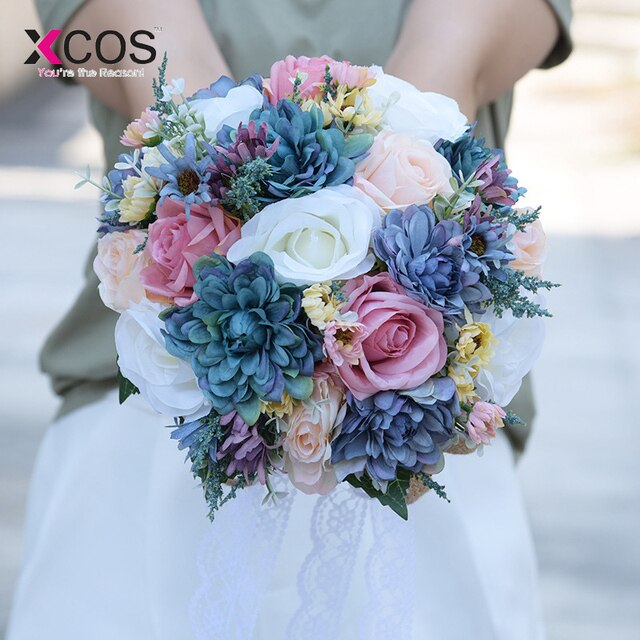
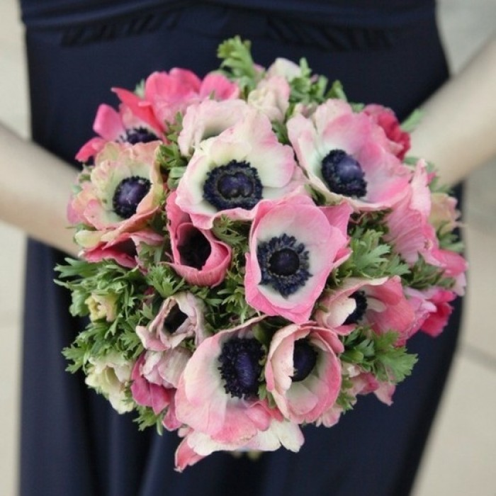
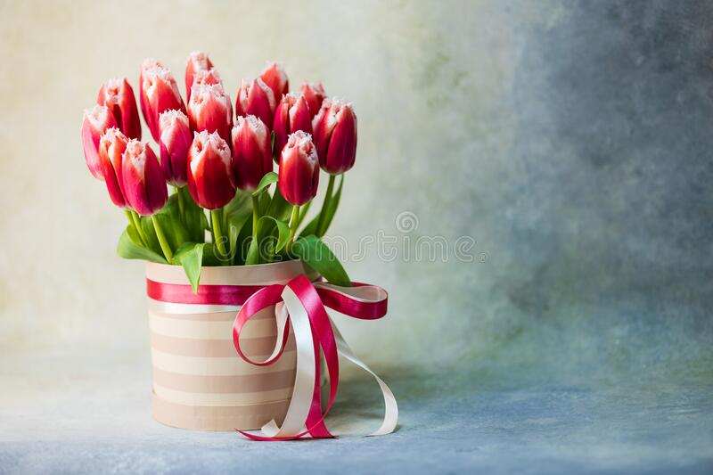
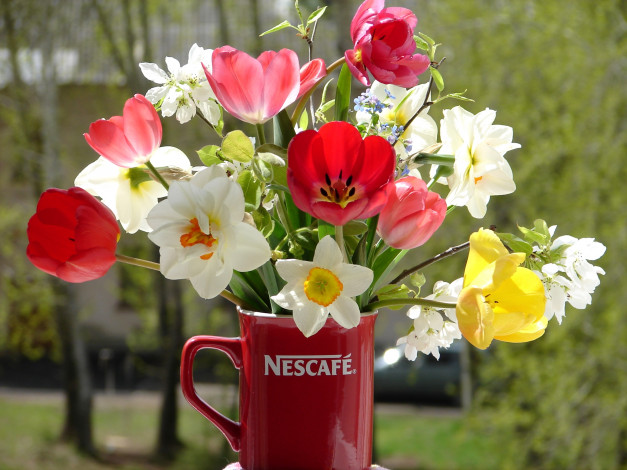
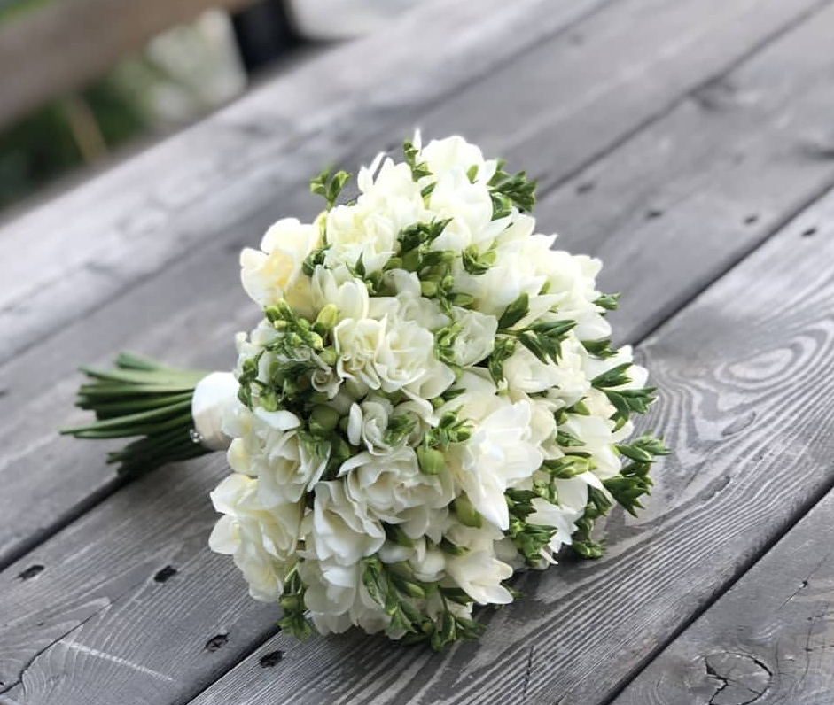
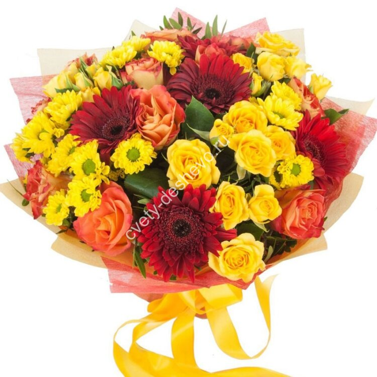
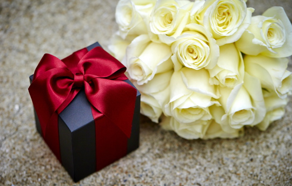
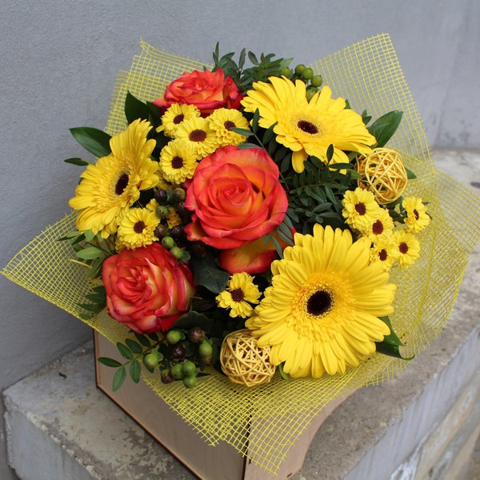

Блог
Главная / Блог

Цветы для мужчин
Выбор свадебного букета
Значение цветов
Цветы для мужчин
Практически любой человек хоть раз в жизни задумывался: можно ли преподносить цветы мужчине и по какому поводу? Существует точка зрения, что цветы – подарок только для женщин. Однако это совсем не так. Правила цветочного этикета позволяют дарить букеты мужчинам. Букеты преподносят актерам, музыкантам, преподавателям, спортсменам, но это отнюдь не означает, что другие представители сильной половины человечества недостойны или не оценят данный дар. Многие из них желают обрести букет в подарок. Безусловно, даря букет представителю сильной половины человечества, нужно придерживаться некоторых правил. Женщина может подарить букет мужчине, если он - виновник праздника и превосходит ее по годам. Предлогом для подобного подарка могут послужить победы в сфере спорта, достижения в науке, успехи в профессиональной деятельности или значимая дата в жизни, юбилей. С букетом можно проведать друга в больнице, навестить близкого человека, однако, помните, цветы не должны обладать ярко выраженным запахом. Мужчинам не следует дарить цветы, обладающие сладким ароматом. Букет должен быть большого размера. Согласитесь, солидный мужчина с маленьким букетиком в руках будет выглядеть смешно. Не ставьте в нелепое положение виновника празднества. Поздравьте его значительной, устремленной вверх композицией, которая символизирует силу и отвагу. Цветы, входящие в ее состав должны быть прежде всего на крепких стеблях. Мужскими слывут растения, имеющие острые мечевидные листья: ирисы, гладиолусы, герберы, георгины, хризантемы и др. Существуют определенные требования к окраске букета. По правилам этикета, цветы, предназначенные мужчине должны обладать насыщенными красными, бордовыми, синими или фиолетовыми оттенками, однако сами представители сильного пола отдают предпочтение оранжевым, красным или желтым. Крайне важно правильно преподнести букет: цветы необходимо держать непременно в левой руке, правой в данный момент пожимают руку виновнику торжества или удерживают главный презент. Если рядом с ним находится жена, то цветочную композицию нужно подарить ей. Разумеется, данные правила не касаются возлюбленных. Близкому мужчине дарите всякие цветы, даже букетик подснежников или васильков. Наши флористы проконсультируют какую композицию подобрать дорогому, близкому человеку, чтобы она пришлась ему по душе! Выбрать, заказать и купить прекрасный букет для мужчины Вы можете в категории "Цветы мажчинам". Дарите цветы мужчинам и поздравляйте незабываемо красиво вместе с "Валентинкой"
Правильный выбор свадебного букета
Трудно представить событие, более наполненное эмоциями, волнениями и ожиданиями, чем свадьба. Данную дату девушка ожидает с детства, представляя себя в шикарном платье, в обществе родных, обаятельного жениха и, безусловно, с роскошным букетом, за обладание которым будут сражаться подруги. Мы поделимся советами, как выбрать свадебный букет, который обязательно станет одним из наиболее запоминающихся элементов бракосочетания. Расскажем каким цветам отдать предпочтение, и как оформить по-настоящему совершенную композицию. К выбору букета невесты подходите с полной ответственностью – помните, он значителен, как платье невесты и костюм жениха. Каждый цветок имеет свое символическое значение, зная его, Вы соберете композицию, которая принесет в Вашу семью счастье и гармонию. Букет должен контрастировать с платьем. Так, к пышному платью подберите изящную и скромную композицию. Выбирайте цветы в зависимости от сезона красочные астры и георгины станут прекрасным дополнением к свадьбе, которая состоится осенью, а пышный белые розы и каллы будут актуальны зимой. Весной можно поэкспериментировать с нежными подснежниками, а летом – с трогательными дарами полей. Прислушиваясь к мифическим подтекстам, нужно отметить, что совершенный букет невесты должен непременно включать в себя лилии, каллы и орхидеи. Правильно подбирайте форму букета. Высокой девушке подойдут удлиненные композиции, а миниатюрные букеты, исполненные в округлых формах. Останавливайте свой выбор на стойких цветах. Помните, что букет проведет с Вами не только день свадьбы, но и последующие сутки. Проконсультируйтесь с флористом о том, как заставить цветы сохранить свежесть и выбирайте композицию, которая пришлась Вам по душе! Выбрать, заказать и купить великолепные букеты невесты, которые традиционно заказывают на свадебное торжество Вы можете здесь.
Значение цветов
Цветы наполняют нашу жизнь радостью, красками, нежностью. С их помощью можно выразить любовь, почтение, уважение, но всегда встает вопрос, какие цветы преподнести любимой девушке, маме, бабушке, сотруднику, руководителю. Давайте разберемся в тонкостях выбора. К помощи цветов можно прибегнуть, когда вы хотите открыть человеку то, что не можете сказать, глядя в глаза: признаться в любви, выразить слова благодарности или просто порадовать дорогого человека. Чем более известен цветок, тем больше значений он имеет. Розы, бесспорно, являются самыми популярными символами красоты и любви. Красные розы обозначат "Я люблю тебя". Букет из красных и белых роз символизирует единство, розовые - грациозность и элегантность, желтые - радость общения. Коралловые, оранжевые поведают о Вашем желании. Бордовые расскажут любимой, что вы восхищаетесь ее красотой. Какие цветы подарить? Детям дарите небольшие, нежные, изящные букетики ярких оттенков без шипов и колючек. Юной красавице не преподносите букеты ярких, вызывающих оттенков. Им подарите воздушные композиции нежных пастельных тонов. Любимой девушке, женщине дарите букеты роз. Букет, предназначенный для мамы, должен передавать без слов вашу любовь, нежность и заботу. Женщинам почтенного возраста не преподносите быстро увядающие цветы темных тонов. Подарите композицию с красочными гвоздиками или пионами розовых оттенков. Композиция для мужчины, должна отличаться простотой, как по форме, так и по содержанию. Выбирайте композиции, насыщенных оттенков: красного, фиолетового, темно-бордового, синего, белого. К незначительным датам можно преподнести один крупный цветок на длинной ножке, к примеру, крупную розу, орхидею. Традиционно мужскими считаются растения с длинным стеблем с крупным соцветием – хризантемы, гладиолусы. Мужчинам в почтенном возрасте не следует преподносить красочные композиции, а молодым юношам подойдет оригинальный букет. Букеты для официальных мероприятий не должны содержать намеков на романтическое, игривое настроение. Не выбирайте экзотические цветы, букет должен выражать ваше уважение и почтительное отношение к получателю. Декорирование композиции должно быть сведено к минимуму, никаких бусинок, узких ленточек. Используйте компактную, неброскую зелень. Мужчинам для делового торжества преподнесите букет роз, лилий, ирисов, гладиолусов. Девушке подарите букет в пастельных тонах. Взрослой женщине - композицию сочных оттенков. Дарите цветы не только в честь праздника, но и без повода, чтобы доставить радость близкому, дорогому вам человеку.
О цветах на 8 Марта
Весенние цветы тюльпаны
Свадебные букеты с хлопком
О цветах на 8 Марта
Вот и приближается прекрасный праздник 8 марта. Все готовятся к нему уже заранее: девушки подбирают наряды, а мужчины ищут варианты для подарка. Тут же всплывает вопрос: «Что же подарить в такой день?» Цветы на 8 марта – важное составляющее женского праздника. Это не просто красивые цветочки, а особый символ любви и внимания. Нежность оттенков, красочность и приятный аромат вскружат голову любой женщине! Благодаря им вы легко расскажите о чувствах и личных мыслях! Покупать обычный букет уже не так ново и оригинально. Стоит отойти от банальностей и подобрать необычный цветочный подарок. Чтобы вы покорили сердце любимой, мы расскажем о нестандартных решениях, против которых никто не устоит! Цветочные корзины Корзина цветов с розами Прекрасная корзинка с пёстрыми бутонами и яркой зеленью станет идеальной альтернативой обычности и простоте. Разнообразие сочетающихся между собой насыщенных оттенков подарят получателю массу эмоций. Дарить живые розы в корзинке можно абсолютно любой женщине: и жене, и матери, и коллеге, и родственнице. Сладкий аромат и приятный окрас подчеркнет ваши искренние чувства. Цветы в коробках Розы в коробке Цветы в шляпной коробке – это оригинально и необычно! Вряд ли вы найдете еще более изысканный и аккуратный подарок, как этот, со свежими бутонами, которые привнесут тепло в сердце дорогого человека. Такой подарок обязательно запомнится, а спрятанная внутри небольшая вещь или аксессуар создаст атмосферу сюрприза. В Минске у нас представлен огромный выбор букетов на любой вкус. Умелые руки флориста по вашему заказу создадут как коробочку ярких изящных роз, так идеальную композицию из разных цветов (гвоздика, тюльпаны, примула и др.) и сочной травы. И купить у нас такой волшебный сюрприз можно совсем недорого. По доступной цене вы не только получите красивый подарок, но и качественную работу профессионалов-флористов. 101 роза Букет из 101 розыПеред чем не устоит ни одна девушка? Конечно, перед шикарным букетом из 101 розы! Если вы ещё задумываетесь, что принести на праздник хозяйке вашего сердца, то решение перед вами. Они сведут с ума каждую женщину! Заказывайте и покупайте изящный букет из 101 розы у нас с доставкой по Минску! Благодаря ему ваш дорогой человек навсегда запомнит этот день и будет безумно благодарен до конца жизни. Символ 8 марта – букет тюльпанов Тюльпаны на 8 марта Тюльпаны – это классика, беспроигрышный вариант для любимых женщин: матери, жены, дочери, сестры. Красивые фиолетовые, розовые, желтые бутоны растопят сердце представительницы прекрасного пола. С их помощью донесёте до близкого человека самые искренние эмоции и раскроете серьёзное намерение. Нежность и страсть, женственность и утонченность – всё это символизируют и раскрывают волшебные тюльпаны. В интернет-магазине вы легко можете сами подобрать тюльпаны понравившегося оттенка. А для большого количества цветков закажите доставку на любой адрес Минска! Выбор цветов: что подарить? Ещё одна задача: как подобрать идеальный подарок для вашего близкого человека? Несколько важных рекомендаций, которые стоит учитывать перед покупкой цветов. Какой цветок выбрать? Хорошо, если вы знаете предпочтения вашей избранницы, тогда вам не нужно выбирать между герберой или сиренью, хризантемами или гвоздикой Шабо. Однако если не знаете, то тюльпаны – проверенный вариант, который нравится многим представительницам прекрасного пола. Они помогут рассказать о пылких чувствах и донести любовь горячего сердца. Перед покупкой было бы правильно разобраться в символике и скрытых смыслах каждого вида, чтобы честно донести эмоции и мысли. Например, хризантемы – символ счастья и благополучия, а герберы – чистой и верной любви. Красивые ландыши расскажут о нежной любви и трепетном отношении, а нарциссы покажут желание и надежду на взаимные отношения. Какой выбрать цвет? Не только сами цветки, но и окраска привносит глубокий тайный смысл в сюрприз. Например: красный означает страсть и яркую любовь; оранжевый означает элегантность и изысканность; розовый показывает нежность, трепет, благодарность; сиреневый является символом верности и искренности; белый уведомит о чистоте намерений и восхищении; фиолетовый расскажет о сильной любви, вспыхнувшем «с первого взгляда». Где купить? Найти, купить и заказать букеты к 8 марта в нашем магазине – верное решение каждого, кто хочет за приятную цену подарить свежие изящные цветы любимым. Только в нашем магазине вы найдете такое разнообразие и столько вариантов: классические композиции, в корзинке или коробках, роскошные композиции из 101 бутона и т.д. С нашими цветочными композициями вы не только создадите оригинальный подарок, но и оставите в душе любимой воспоминание о свежих цветах, их приятном аромате и чувствах, которые вы хотите донести
Весенние цветы тюльпаны: символика и значение
Весна для писателей и поэтов всегда ассоциируется с новой жизнью, расцветанием, надеждой, вторым дыханием, любовью. В этот период особую сказочную атмосферу создают весенние цветы. Яркие, красочные, нежные окрасы заполняют всё вокруг и дарят радостное настроение! Топ-10 весенних цветов Вместе с уходящими морозами и тающими снегами весна приносит первые весенние цветы, которые знаменуют приход тепла, солнца, свежести. Популярные первые цветы весеннего сезона: Подснежник Первоцвет (Примула) Пролеска (Сцилла) Тюльпаны Нарцисс Ирис Крокус (Шафран) Горицвет (Адонис) Фиалки Маргаритки Широко распространенным цветком, которого покупают в радость себе и близким, являются весенние тюльпаны. Тюльпаны: историческая справка Прекрасные цветы имеют не менее прекрасную легенду. Основа этой истории – любовь турецкого правителя и изумительной девушки, на которой он собирался жениться. Слух, который пустили недруги и завистники, о смерти любимой настолько поразила правителя, что он, обезумев от горя, сбросился со скалы. По легенде именно там, где его кровь коснулась земли, впервые появились тюльпаны. Теперь понятна основная символика цветка: искренняя сильная любовь и настоящая преданность. Тюльпаны появились очень давно, примерно 15 миллионов лет назад. Уже сейчас в мире существует большое количество видов (более ста) и сортов (число доходит до 1800) растения! До распространения цветов в Голландии тюльпаны прошли свой нелёгкий длинный путь: зародившись в Персии, они распространялись по Азии, попали в Турцию, а оттуда уже были переданы в руки голландского ботаника, с которого и началось массовое распространение. И по сей день Нидерланды считаются лидерами по выращиванию цветочной продукции. Когда цветут тюльпаны? В Голландии тюльпаны начинают цвести с середины марта до начала мая. Апрель в стране Нидерланды – самый сезон для цветения, поэтому в этот месяц поля окрашиваются в сочные или нежные оттенки всевозможного окраса. В нашем климате растение также цветет в апреле или мае, в зависимости от погоды и условий. Тюльпаны как подарок Это настолько изящные цветы, что дарить их можно по поводу и без. Ни один праздник не обходится без них: День рождения, свадьба, юбилей, выпускной и др. По сути, для подарка особый случай не нужен: мужчины могут подарить тюльпаны любимым женщинам, чтобы выразить любовь и признательность. Его можно подарить абсолютно любому человеку: сестре, маме, жене, родственнице, коллеге по работе или начальнику! Значение и символика тюльпана Цветы тем ещё прекрасны, что каждый вид (роза, сирень, маргаритка) имеет своё толкование. Весенний цветок тюльпан означает: счастье; любовь; благополучие; примирение; преданность. В истории был период, когда они являлись показателями роскоши и богатства. В период тюльпаномании за продажу нескольких луковиц особенного сорта или вида могли получить драгоценности, корабль или целый дом! Значение окраса В мире существует множество языков, и один из самых красивых – цветочный. Благодаря этому подарку легко выразить чувства, эмоции, надежды и намерения, которые иногда трудно высказать словами. Красные оттенки – символизм пылкой, страстной, восторженной любви. Идеальный вариант на первое свидание. Белые – это нежность, тепло, внимание. В них заложены искренность чувств и чистота намерений. Розовые означают нежность, грациозность, изящность. Просто идеально подходят для начала серьезных отношений. Оранжевые – идеальный вариант для пожелания крепкого здоровья и хорошего настроения начальству и коллегам. Желтые говорят о наслаждении, радости и счастье, но никак не о разлуке! Голубые – это удача, успех, благополучие и процветание. Значения числа бутонов в букете Количество цветков в одной композиции несет в себе определенный смысл, который женщины могут легко считать: один цветок расскажет о том, что избранница для вас единственная; три – идеальная комбинация по любому поводу; пять бутонов подходят в подарок близким людям: бабушке, маме, сестре, племяннице и т.д.; семь покупают для того, чтобы показать крепкие искренние чувства к любимой; большое количество цветков в удивительном букете расскажет о бесконечном восхищении любимой женщиной. Рекомендации по выбору тюльпанов При покупке свежих цветов следует знать детали, чтобы ваш избранный человек дольше любовался прекрасным букетом. Свежий бутон – мягкий, упругий, твердый и правильной формы конуса. Лепестки должны быть аккуратными, без завернутых уголков, темных краев или заломов. Свежие листья имеют сочный зеленый цвет без пятен или каких-либо повреждений. Ровный, толстый и упругий стебель. Перед покупкой обязательно посмотрите на кончик: если белый, то цветок свежий; если зеленый – его недавно срезали. Чтобы растение дольше стояло, лучше покупать средние по размеру бутоны. Внимательное отношение к покупке поможет подарить дорогому человеку свежий, классный букет тюльпанов, которые порадуют глаза и сердце. Весенние цветы тюльпаны Тюльпаны – популярные, хорошо известные весенние цветы, которые приходят с первыми лучами солнца и дарят тепло. Благодаря легенде возникновения и символике, они правдиво расскажут об истинных чувствах, мыслях и отношении к избранному человеку. Дарить букет можно абсолютно на любой праздник: Дни рождения; свадьбы; юбилеи; важные встречи; 8 марта и др. Впрочем, и без повода неожиданно преподнесенный букет весенних цветов подарит улыбку, радость и воспоминание человеку. Перед покупкой обязательно обратите внимание на: значение окраса; количество бутонов; состояние бутонов, лепестков, стебля. Свежие прекрасные тюльпаны всевозможных сортов купить или заказать в Минске можно на нашем сайте. Дарите тепло и улыбки вместе с прекрасными тюльпанами!
Свадебные букеты с хлопком
Обдумывая образ невесты, нужно пристальное внимание уделить свадебному букету, так как он является не просто украшением, а значимым аксессуаром. Он будет в центре внимания всех присутствующих на торжестве, будет зафиксирован на всех праздничных фотографиях. Поэтому ответственно отнеситесь к выбору букета невесты. В настоящее время большой популярностью пользуются свадебные букеты с нежным хлопком. Букеты с хлопком смотрятся ослепительно, нежно и невесомо, будто, состоят из маленьких облаков. Они зачаровывают своею красотой.Хлопчатник является сухоцветом, поэтому он не боится температурных перепадов. Он прекрасно вынесет как зимние морозы, так и летнюю жару, и продолжительное время, сохраняя безукоризненный внешний вид. Данное растение придает композиции чувство уюта и тепла в зимнее время, а летней порой – эфирности и невесомости. С какими цветами сочетается хлопок? Нежные ранункулюсы в соединении с хлопком будут смотреться еще утонченнее.Букет невесты с хлопком - модный тренд 2018-2019 года. Если вы хотите, чтобы он получился гармоничным и красивым, то доверьте составление свадебной композиции профессиональным флористам, которые со знанием дела отнесутся к подбору всех составляющих элементов. В ассортименте магазина Розы.бел всегда большой выбор свежих цветов многообразных сортов и расцветки. Высококвалифицированные флористы составят прекрасный букет, который подчеркнет прелесть и изящность невесты, и будет радовать своей красотой на протяжении всего торжества. Заказать и купить букет невесты с хлопком с доставкой по Минску можно на сайте Валентинка Выбирайте лучшее!
Цветы для мужчин
Выбор свадебного букета
Радуем Маму: какой букет подарить ?
Цветы для мужчин
Практически любой человек хоть раз в жизни задумывался: можно ли преподносить цветы мужчине и по какому поводу? Существует точка зрения, что цветы – подарок только для женщин. Однако это совсем не так. Правила цветочного этикета позволяют дарить букеты мужчинам. Букеты преподносят актерам, музыкантам, преподавателям, спортсменам, но это отнюдь не означает, что другие представители сильной половины человечества недостойны или не оценят данный дар. Многие из них желают обрести букет в подарок. Безусловно, даря букет представителю сильной половины человечества, нужно придерживаться некоторых правил. Женщина может подарить букет мужчине, если он - виновник праздника и превосходит ее по годам. Предлогом для подобного подарка могут послужить победы в сфере спорта, достижения в науке, успехи в профессиональной деятельности или значимая дата в жизни, юбилей. С букетом можно проведать друга в больнице, навестить близкого человека, однако, помните, цветы не должны обладать ярко выраженным запахом. Мужчинам не следует дарить цветы, обладающие сладким ароматом. Букет должен быть большого размера. Согласитесь, солидный мужчина с маленьким букетиком в руках будет выглядеть смешно. Не ставьте в нелепое положение виновника празднества. Поздравьте его значительной, устремленной вверх композицией, которая символизирует силу и отвагу. Цветы, входящие в ее состав должны быть прежде всего на крепких стеблях. Мужскими слывут растения, имеющие острые мечевидные листья: ирисы, гладиолусы, герберы, георгины, хризантемы и др. Существуют определенные требования к окраске букета. По правилам этикета, цветы, предназначенные мужчине должны обладать насыщенными красными, бордовыми, синими или фиолетовыми оттенками, однако сами представители сильного пола отдают предпочтение оранжевым, красным или желтым. Крайне важно правильно преподнести букет: цветы необходимо держать непременно в левой руке, правой в данный момент пожимают руку виновнику торжества или удерживают главный презент. Если рядом с ним находится жена, то цветочную композицию нужно подарить ей. Разумеется, данные правила не касаются возлюбленных. Близкому мужчине дарите всякие цветы, даже букетик подснежников или васильков. Наши флористы проконсультируют какую композицию подобрать дорогому, близкому человеку, чтобы она пришлась ему по душе! Выбрать, заказать и купить прекрасный букет для мужчины Вы можете в категории "Цветы мажчинам". Дарите цветы мужчинам и поздравляйте незабываемо красиво вместе с "Валентинкой"
Правильный выбор свадебного букета
Трудно представить событие, более наполненное эмоциями, волнениями и ожиданиями, чем свадьба. Данную дату девушка ожидает с детства, представляя себя в шикарном платье, в обществе родных, обаятельного жениха и, безусловно, с роскошным букетом, за обладание которым будут сражаться подруги. Мы поделимся советами, как выбрать свадебный букет, который обязательно станет одним из наиболее запоминающихся элементов бракосочетания. Расскажем каким цветам отдать предпочтение, и как оформить по-настоящему совершенную композицию. К выбору букета невесты подходите с полной ответственностью – помните, он значителен, как платье невесты и костюм жениха. Каждый цветок имеет свое символическое значение, зная его, Вы соберете композицию, которая принесет в Вашу семью счастье и гармонию. Букет должен контрастировать с платьем. Так, к пышному платью подберите изящную и скромную композицию. Выбирайте цветы в зависимости от сезона красочные астры и георгины станут прекрасным дополнением к свадьбе, которая состоится осенью, а пышный белые розы и каллы будут актуальны зимой. Весной можно поэкспериментировать с нежными подснежниками, а летом – с трогательными дарами полей. Прислушиваясь к мифическим подтекстам, нужно отметить, что совершенный букет невесты должен непременно включать в себя лилии, каллы и орхидеи. Правильно подбирайте форму букета. Высокой девушке подойдут удлиненные композиции, а миниатюрные букеты, исполненные в округлых формах. Останавливайте свой выбор на стойких цветах. Помните, что букет проведет с Вами не только день свадьбы, но и последующие сутки. Проконсультируйтесь с флористом о том, как заставить цветы сохранить свежесть и выбирайте композицию, которая пришлась Вам по душе! Выбрать, заказать и купить великолепные букеты невесты, которые традиционно заказывают на свадебное торжество Вы можете здесь.
Радуем маму: какой букет подарить ?
Вспомнить о предпочтениях: Чаще всего, цветы для букета маме выбирают одним из трех способов. Самый верный – опираться на вкусы получателя и исходить из них. Флорист поможет подобрать гармоничное сочетание из маминых любимых цветов и красиво оформить букет. В этом случае прочие вводные типа стойкости цветка не имеют никакого значения, ведь вы дарите именно то, что человек мечтает получить.Зашифровать цветочное послание: Если вы не уверены по поводу предпочтений мамы, можно пойти другим путем. Существует язык цветов – своеобразная грамота, зная которую с помощью букета можно передать определенное послание. Главным цветочным символом Дня матери во многих странах считаются гвоздики светлых оттенков. Монобукеты или букеты с добавлением этого цветка принято преподносить в этот день, как символ благодарности за подаренную жизнь и вклад в воспитание.С материнством на языке цветов также связаны любые виды цветов с кремовыми бутонами. Поэтому если по каким-то причинам вам не хочется дарить гвоздики, подчеркнуть важность мамы в вашей жизни можно с помощью молочных кустовых или пионовидных роз, хризантем или нежной эустомы.